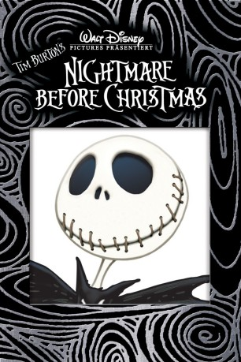
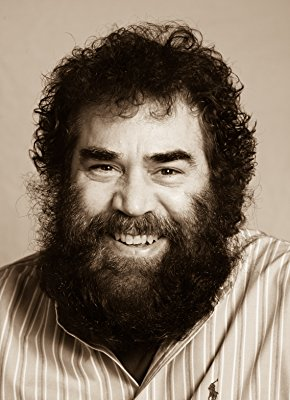

#2437 Nightmare Before Christmas
Alternativ: The Nightmare Before Christmas
Auszeichnungen: für 1 Oscars nominiert
 
 IMDB-Wertung: 8.0 / 10
IMDB-Wertung: 8.0 / 10  Metascore: 82
Metascore: 82 
Stop-Motion-Trickfilm von Tim Burton, in der der Kürbis-König Jack Skellington sein Leben satt hat und lieber mal etwas anderes als Halloween ausrichten möchte. Als er die Tür zur "Christmas Town" findet, beschließt er den Weihnachtsmann zu entführen und der Erde seine Vertzretung anzutreten. Doch irgendwie will dem Halloween-Experten das Weihnachtsbusiness nicht so richtig gelingen.
Jahr: 1993
Dauer: 76 Minuten
FSK: 6
Land: USA Studio: Buena Vista InternationalTonspuren: DD5.1 - ,
Untertitel: Englisch,
Auflösung: 1080p (1920x1080) Größe: 5304 MB
Genre: Fantasy, Animation/Trick, Familie, Musical, Weihnachten
Regisseur: Henry Selick
Drehbuch: Tim Burton, Michael McDowell, Caroline Thompson
Soundtrack: Danny Elfman
Darsteller:
- Danny Elfman als Jack Skellington - Singing Voice / Barrel / Clown with the Tear Away Face
- Chris Sarandon als Jack Skellington
- Catherine O'Hara als Sally / Shock
 William Hickey als Evil Scientist
William Hickey als Evil Scientist- Glenn Shadix als Mayor
 Paul Reubens als Lock
Paul Reubens als Lock- Ken Page als Oogie Boogie
- Greg Proops als Harlequin Demon / Devil / Sax Player
- Carmen Twillie als Undersea Gal / Man Under the Stairs
- John Morris als Additional Voices
- Elena Praskin als Additional Voices
- Daamen J. Krall als Additional Voices
 Gary Schwartz als Additional Voices
Gary Schwartz als Additional Voices- Joe Ranft als Igor , uncredited
- Edward Ivory als Santa
- Susan McBride als Big Witch / WWD.
- Debi Durst als Corpse Kid / Corpse Mom / Small Witch
- Kerry Katz als Man Under Stairs / Vampire / Corpse Dad
-  Randy Crenshaw als Mr. Hyde / Behemoth / Vampire Corpse Dad
- Sherwood Ball als Mummy / Vampire
- Glenn Walters als Wolfman
- Mia Brown als Additional Voices
- L. Peter Callender als Additional Voices
- Ann Fraser als Additional Voices
- Jennifer Levey als Additional Voices
- Jesse McClurg als Additional Voices
- Robert Olague als Additional Voices
- Bobbi Page als Additional Voices
- Trampas Warman als Additional Voices
- Judi M. Durand als Additional Voices
- Doris Hess als Additional Voices
- Christina MacGregor als Additional Voices
- David McCharen als Additional Voices
- Gary Raff als Additional Voices
- David Randolph als Additional Voice
- Billie Hayes als Witches / Additional Voices , uncredited
Datei: X:\Kinder Filme (N-Z)\Nightmare Before Christmas (1993, FSK6, 1920x1080).mkv seit 10.11.2015
Festplatte: Kinder-Filme+Trick
 Es gibt insgesamt 87 Filme in der Gruppe 'Kinder Filme (N-Z)'
Es gibt insgesamt 87 Filme in der Gruppe 'Kinder Filme (N-Z)'